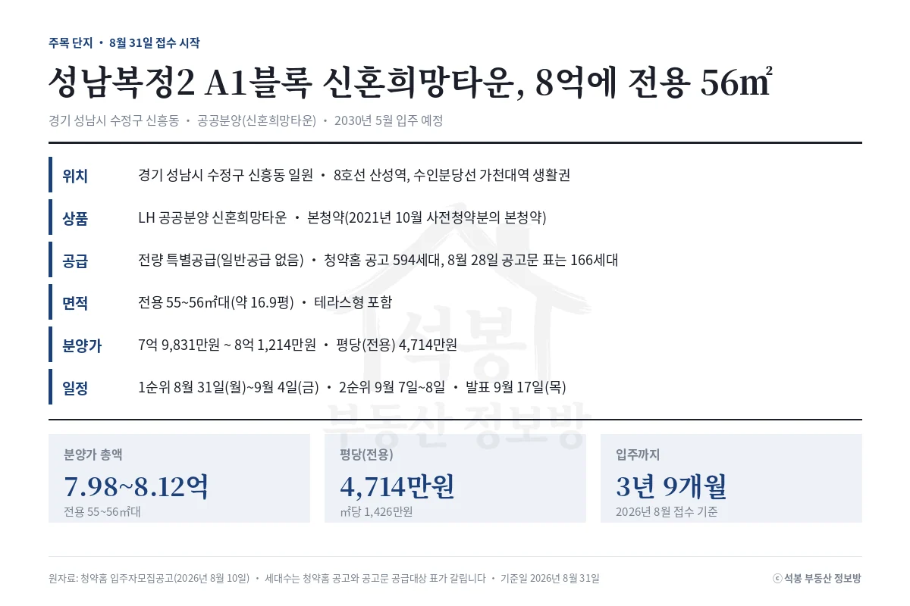
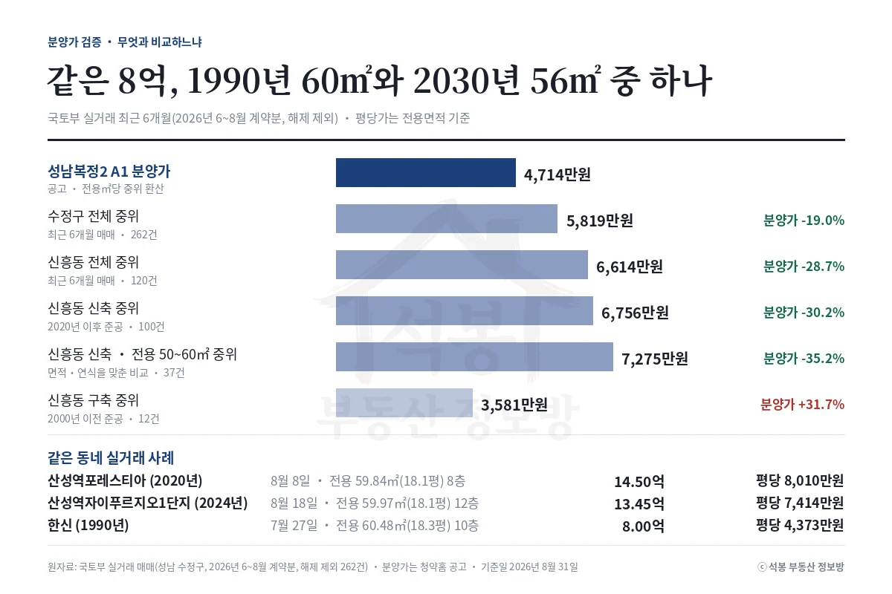
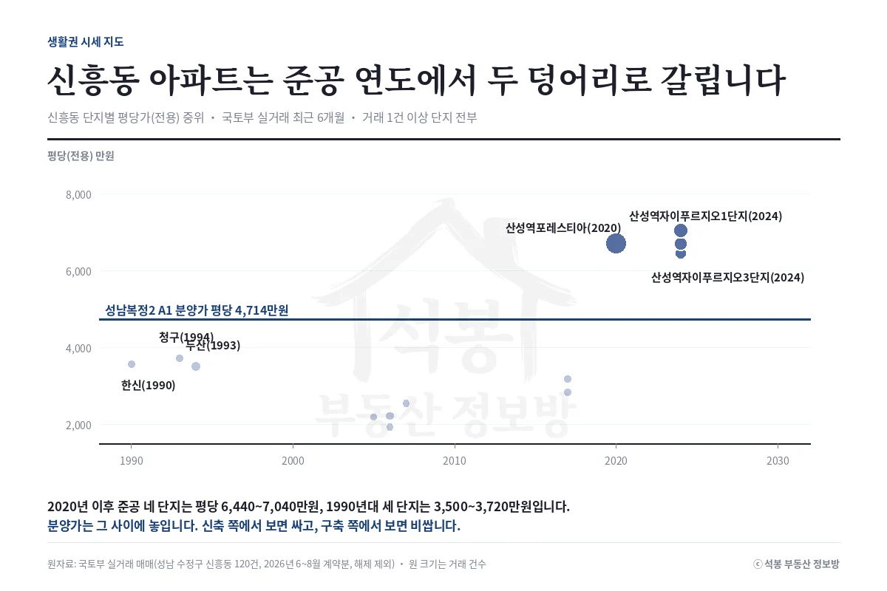
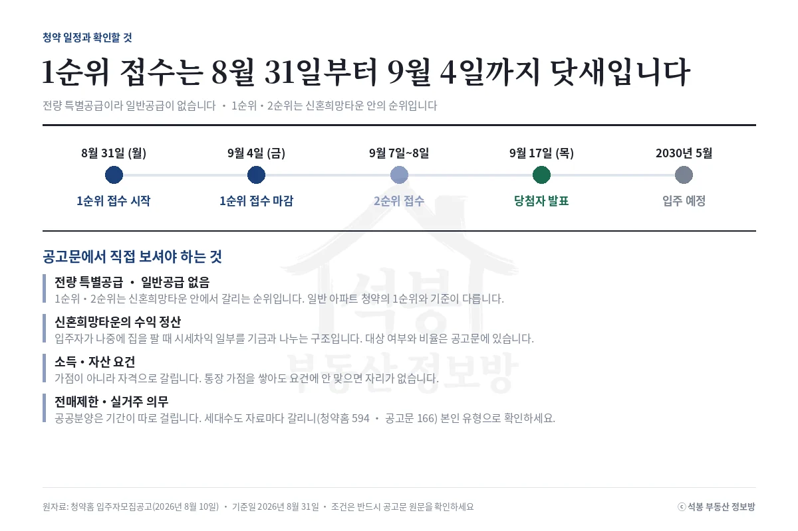

2026년 8월 31일 성남복정2 A1블록 신혼희망타운이 접수를 시작합니다. 전용 55~56㎡대(약 16.9평)에 7억 9,831만원부터 8억 1,214만원입니다. 같은 동네 신축 60㎡대(약 18.1평)는 13억에서 15억 사이에 팔리고, 1990년 준공 아파트 60㎡대는 8억에 팔렸습니다.
하나. 8호선 산성역 생활권에 2030년 입주 예정입니다

경기 성남시 수정구 신흥동 일원에 들어서는 LH 공공분양 신혼희망타운입니다. 8호선 산성역과 수인분당선 가천대역을 함께 쓰는 자리이고, 2021년 10월 사전청약을 받았던 단지의 본청약입니다. 면적은 한 가지 크기로만 나오고 테라스형이 섞여 있습니다.
먼저 알아 두실 것이 있습니다. 이번 공고는 전량 특별공급이라 가점으로 다투는 일반공급이 없습니다. 접수가 1순위와 2순위로 나뉘지만 이건 신혼희망타운 안에서 갈리는 순위이고, 일반 아파트 청약의 1순위와는 기준이 다릅니다. 본인이 어느 순위인지는 공고문에서 확인하세요.
일정은 1순위가 8월 31일 월요일부터 9월 4일 금요일까지, 2순위가 9월 7일 월요일과 8일 화요일입니다. 당첨자 발표는 9월 17일 목요일이고 입주는 2030년 5월 예정입니다. 지금 넣는 분 기준으로 계약부터 입주까지 3년 9개월이 남습니다.
세대수는 자료마다 갈립니다. 청약홈 공고는 594세대인데, 저희가 2026년 8월 28일에 공고문을 열었을 때 공급대상 표는 166세대였습니다. 사전청약 단지라 생기는 차이로 보이지만 확정할 수 있는 부분이 아닙니다. 지원 전에 공고문에서 본인 유형의 세대수를 직접 확인하세요.
사연이 긴 단지입니다. 사전청약 때 안내된 본청약은 2023년 5월, 입주는 2025년 10월이었습니다. 실제 공고는 3년 3개월 늦은 2026년 8월에 나왔고 입주는 2030년 5월로 4년 7개월 밀렸습니다.
지연의 큰 축은 인근 주민의 사업 반대였습니다. 바로 옆 산성역포레스티아 입주자 대표회의와 신흥동 영장산 개발반대 비대위가 2021년 6월 기자회견을 열어 사업 중단을 요구했습니다. 그해 10월에는 신흥동 일원 주민 1,062명이 지구 지정·지구계획 변경 승인이 무효라며 서울행정법원에 소송을 냈습니다.
내세운 근거는 영장산 녹지 훼손, 멸종위기종 2급 맹꽁이와 천연기념물 소쩍새·황조롱이 서식, 전략환경영향평가 절차 문제였습니다. 다만 맹꽁이는 짚어 둘 것이 있습니다. 국토부는 당시 "현지조사에서 맹꽁이를 확인했으나 사업지역으로부터 직접적인 거리에 있지 않아 사업 시행에 큰 영향은 없다"고 밝혔습니다.
학교 문제와 땅 문제도 겹쳤습니다. 아파트 일부 동이 인근 초중학교와 15~20m 거리라는 학부모 민원에 LH가 설계를 바꿔 그 동들을 뺐고, 공급 규모가 1,026세대에서 892세대로 줄었습니다. 지구 안 성남시 소유 땅 매각도 늦어져 2023년 5월에야 마무리됐습니다.
그 시간의 대가는 분양가로 돌아왔습니다. 총사업비가 4,895억원에서 7,688억원으로 57.1% 늘었고, 2021년 사전청약 때 5억 3,840만원(전용 55㎡·16.6평)으로 안내됐던 추정 분양가는 본청약에서 7억 6,637만~7억 9,845만원이 됐습니다. 최대 2억 6,005만원, 48.3% 오른 값입니다.
여기서부터는 회원에게 보여드립니다
카카오 로그인 3초면 전문을 읽을 수 있습니다. 무료입니다.
가입하시면 지역 시장조사 보고서(약식)를 2회 무료로 요청하실 수 있습니다.
이미 회원이면 같은 버튼으로 로그인만 됩니다
둘. 분양가 검증: 기준 다섯 개를 다 대봤습니다
분양가를 평당(전용)으로 옮기면 4,714만원입니다. 이 값을 성남 수정구 실거래와 맞대 봤습니다. 국토부 아파트 매매 최근 6개월(2026년 6~8월 계약분, 해제 제외) 262건이 근거입니다.

비교 기준을 넓게 잡을수록 싸 보입니다. 수정구 전체 중위(5,819만원)와 대면 19.0% 아래, 신흥동 전체 중위(6,614만원)와 대면 28.7% 아래입니다. 신흥동 신축(2020년 이후 준공)만 추리면 6,756만원이라 30.2% 아래가 됩니다.
가장 공정한 비교는 면적과 연식을 함께 맞춘 것입니다. 신흥동 신축 중에서 전용 50~60㎡(15.1~18.1평) 거래만 골라 낸 중위가 7,275만원이고, 분양가는 그보다 35.2% 아래입니다. 37건이 근거입니다.
그런데 방향을 뒤집으면 답도 뒤집힙니다. 신흥동 구축(2000년 이전 준공) 중위는 3,581만원이라, 분양가가 오히려 31.7% 위입니다. 같은 숫자를 놓고 "35% 싸다"와 "32% 비싸다"를 둘 다 쓸 수 있습니다.
실거래로 보면 더 분명합니다. 산성역포레스티아 전용 59.84㎡(18.1평)가 8월 8일 14억 5,000만원(평당 8,010만원), 산성역자이푸르지오1단지 59.97㎡(18.1평)가 8월 18일 13억 4,500만원(평당 7,414만원)에 팔렸습니다. 같은 동네 1990년 준공 한신 60.48㎡(18.3평)는 7월 27일 8억원, 평당 4,373만원이었습니다.
맨 아래 줄이 이 글의 요지입니다. 같은 8억으로 신흥동의 36년 된 60㎡(18.3평) 아파트를 지금 살 수도 있고, 2030년에 입주하는 56㎡(16.9평) 신축을 기다릴 수도 있습니다. 면적은 3.5㎡(1.1평) 줄고, 대신 40년의 연식 차이와 3년 9개월의 기다림을 맞바꾸는 선택입니다.
셋. 신흥동 시세는 준공 연도에서 두 덩어리로 갈립니다

신흥동 거래 120건을 단지별로 흩어 놓고 준공 연도를 가로축에 두면 중간이 비어 있습니다. 2020년 이후 준공된 네 단지가 평당 6,440~7,040만원에 몰려 있고, 1990년대 세 단지가 3,500~3,720만원에 있습니다.
산성역 일대가 재개발로 한꺼번에 바뀐 동네라 그렇습니다. 산성역포레스티아가 2020년, 산성역자이푸르지오 1~3단지가 2024년에 들어섰습니다. 그 사이 30년치 연식대의 단지가 사실상 없습니다.
분양가는 그 빈 구간에 놓입니다. 신축 쪽에서 내려다보면 싸고, 구축 쪽에서 올려다보면 비쌉니다. 어느 쪽 값으로 수렴할지는 2030년 입주 시점의 시장이 정할 일이라 지금 단정할 수 없습니다.
넷. 정리와 공고문에서 확인할 것

신혼희망타운은 수익 정산 구조가 붙는 상품입니다. 입주자가 나중에 집을 팔 때 시세차익의 일부를 주택도시기금과 나눕니다.
대상 여부와 비율은 공고문에 적혀 있으니 반드시 원문에서 확인하세요. 이 글에 적힌 시세 갭은 그 정산을 반영하지 않은 값입니다.
정리하면 이렇습니다. 같은 면적대·같은 연식으로 맞춘 가장 공정한 비교에서 분양가는 시세보다 35% 아래입니다. 다만 그 차이의 일부는 나중에 정산으로 돌려주는 구조라, 그대로 이익이라고 읽으면 안 됩니다.
앞에서 말씀드린 대로 이 단지는 가점이 아니라 자격에서 갈립니다. 일반공급이 없으니 통장 가점을 아무리 쌓아도 요건에 안 맞으면 들어갈 자리가 없습니다. 소득·자산 기준과 전매제한, 실거주 의무를 먼저 보시고 그다음에 값을 따지는 순서가 맞습니다. 결과는 9월 17일 발표 이후에 실제 데이터로 다시 확인하겠습니다.
자료: 청약홈 입주자모집공고(2026년 8월 10일), 국토교통부 아파트 매매 실거래(해제 제외). 기준일 2026년 8월 31일.
지연 경위·사전청약 추정가·총사업비·공급 규모 변경은 뉴스웍스(2021년 10월 12일)·뉴스토마토(2023년 3월 27일)·조선비즈(2026년 8월 12일) 보도와 LH 안내 공문을 대조했습니다.
시세는 성남시 수정구 2026년 6~8월 계약분 262건(신흥동 120건)의 중위값, 분양가는 전용㎡당 중위(1,426만원) 환산이며 면적·평당가는 전용면적 기준입니다.
신혼희망타운 수익 정산은 반영하지 않았으므로 갭은 그대로 이익이 아닙니다. 투자 권유가 아닙니다.